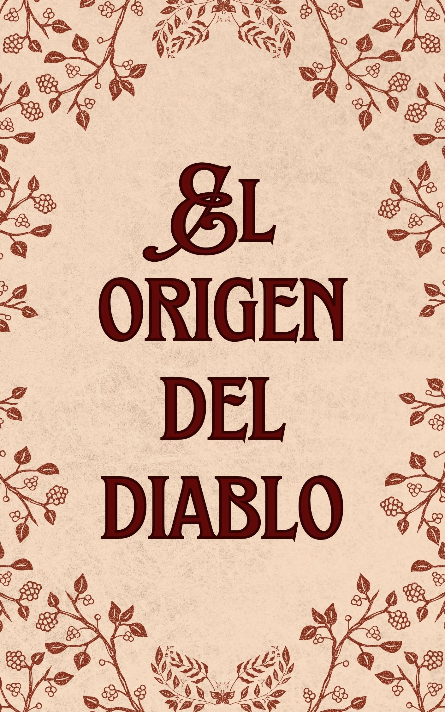

Cuando desperté, ¿¡me convertí en el Rey Demonio!?
Es mi responsabilidad como Rey Demonio aumentar la población de monstruos, y la única forma de hacerlo es aparearme con tantos monstruos como pueda...
Este es el comienzo de mi vida como Rey Demonio creador de monstruos.